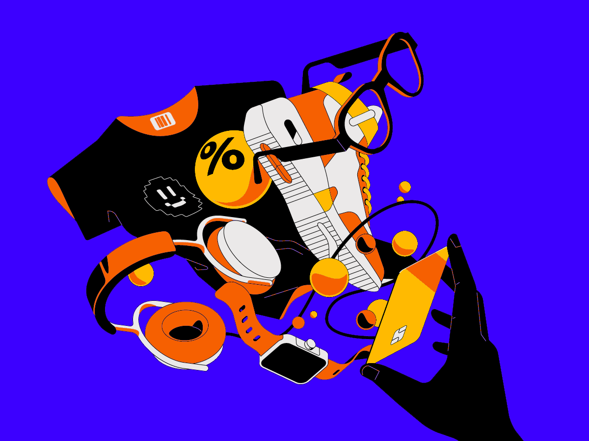
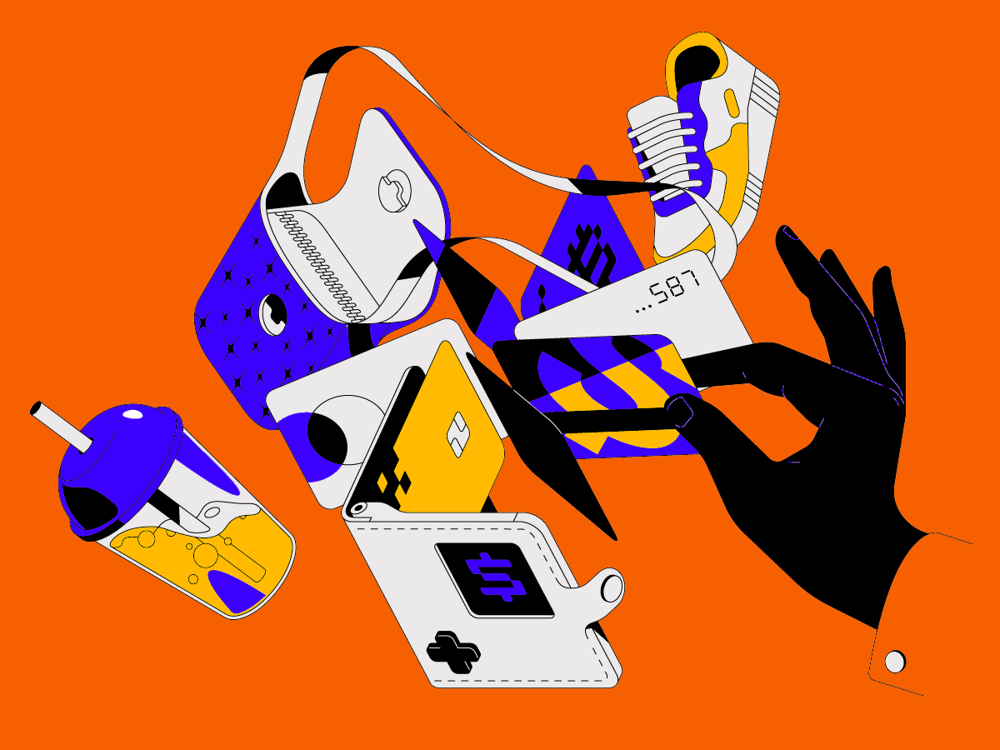
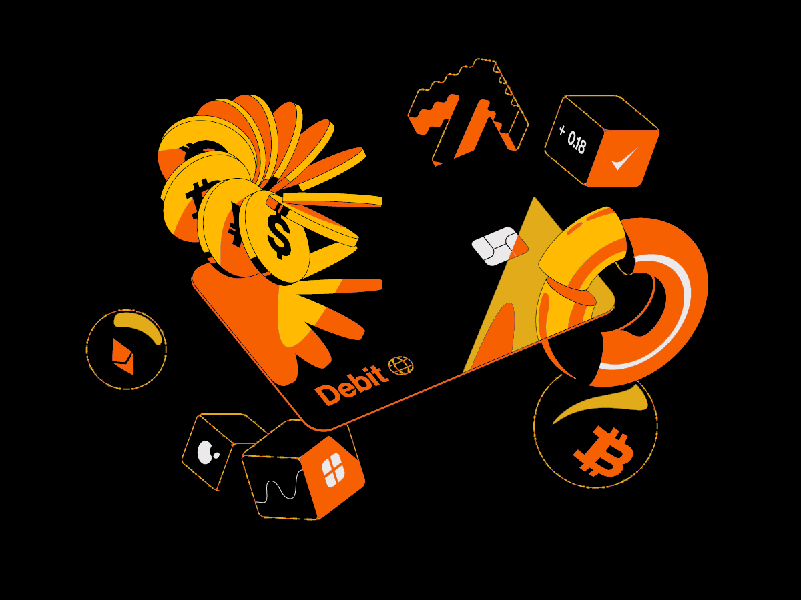

Hernandes
Matias Junior
Tech Lead e Engenheiro de Dados Sênior no Itaú Unibanco. Sempre tive medo de ficar sem trabalho e isso fez com que eu me qualificasse para poder fazer um monte de coisas.
Formação acadêmica
Não dá para falar que eu não estudei
Experiência profissional
Aqui só tem as experiências em dados, mas até vendedor de shopping eu já fui
-
Atendendo a Comunidade de Pagamentos e seus principais produtos, como PIX, TED, TEF e Boletos.
- Pipeline que mede o impacto do cadastro no DDA sobre o engajamento do cliente, comparando janelas de 3 meses antes e depois. Consumido por Cientistas de Dados e Engenheiros de Analytics;
- Tabela SPEC que identifica clientes com propensão ao uso do Hub de Pagamentos, integrando 12 origens de dados (transacionais e de navegação). Produto consumido pelo negócio para direcionar ações de engajamento;
- Pipeline que consolida boletos emitidos para clientes Itaú Unibanco e mede onde são pagos (no banco ou na concorrência) mapeando a perda de participação nas transações.
Principais entregas:
-
Atuação na área de CRM da empresa, atendendo principalmente o cliente pessoa física.
- Segmentação de clientes com machine learning não supervisionado e modelagem RFV aplicada à base de CRM.
- Desenvolvimento de modelos preditivos de propensão e previsão de churn.
- Preparação de dados para modelagem, incluindo seleção de variáveis e engenharia de features.
- Análise exploratória e estatística para suporte à definição e avaliação de campanhas de CRM.
- Elaboração de dashboard em Power BI para acompanhamento de indicadores.
Principais entregas:
- Soluções de dados para suporte à decisão em controladoria, suprimentos, compliance e gestão de equipamentos.
- Modelagem e estruturação de dados em data warehouse para definição e acompanhamento de indicadores operacionais e financeiros.
- Construção de dashboards analíticos no Power BI.
- Automação de rotinas analíticas e processos de dados com Python.
- Desenvolvimento de aplicações corporativas com Power Apps e interação direta com áreas de negócio para levantamento e tradução de requisitos.
Projetos
Melhor do que falar, é mostrar o que eu sei fazer, né?

Previsão de vendas
Descrição do projeto — substitua por dois períodos curtos explicando o problema e o resultado.

Risco de crédito
Descrição do projeto — substitua por dois períodos curtos explicando o problema e o resultado.

Segmentação de clientes
Descrição do projeto — substitua por dois períodos curtos explicando o problema e o resultado.
[Em breve] Análise de sobrevivência
Descrição do projeto — substitua por dois períodos curtos explicando o problema e o resultado.
[Em breve] Ingestão e modelagem de dados
Descrição do projeto — substitua por dois períodos curtos explicando o problema e o resultado.
[Em breve] Agente de consulta a dados
Descrição do projeto — substitua por dois períodos curtos explicando o problema e o resultado.
Skills
ajuste conforme necessárioEngenharia de dados
Ciência de dados & analytics
IA & automação
Idiomas
Cursos extracurriculares
168 horasVamos conversar
sobre dados.
Aberto a trocas sobre engenharia de dados, pagamentos e IA aplicada.